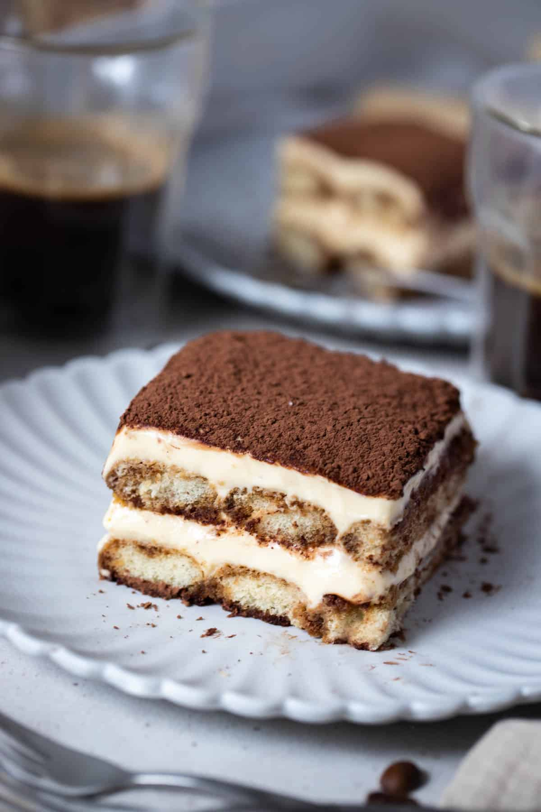

Tiramisu

Description
Tiramisu ("pick-me-up") is one of the most enjoyed dessert in Italy.
Ingredients
- Espresso coffee - 3 coffee cups
- Ladyfinger sponges ("Savoiardi") - 200g
- Caster sugar - 150g
- Vanilla
- Mascarpone - 400g
- Eggs - 4 yolks, 2 whites
- Cocoa
Steps
- Separate the yolks from the whites and beat the latter.
- Separately, whip the sugar and the yolks until you get a clear and foamy batter.
- Add the mascarpone to the batter and incorporate it.
- Add the beaten whites to the mascarpone batter and mix them together.
- Slightly soak the Savoiardi in the coffee before laying them on a flat, rectangular plate to form a layer. Don't use all the Savoiardi now.
- Spread some Mascarpone cream on top of the layer of Savoiardi.
- Repeat previous two steps until you run out of Savoiardi. Careful not to put down a layer that you can't cover with cream.
- Sprinkle the cocoa on top and put in the fridge. After about three hours, the Tiramisu is ready.